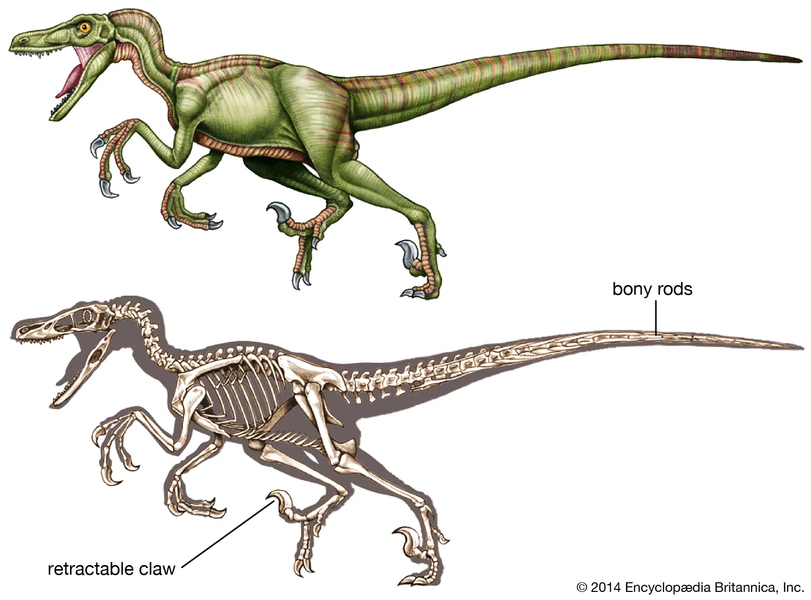
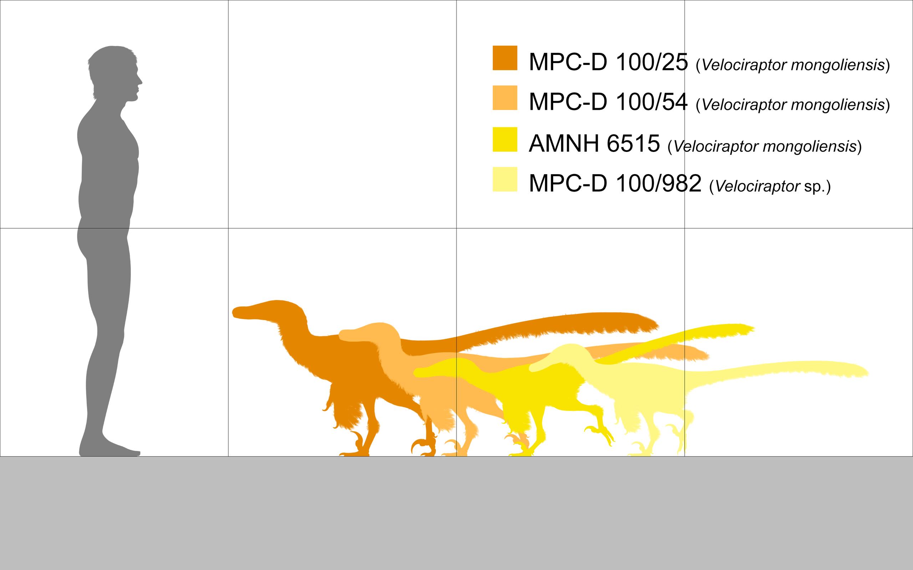
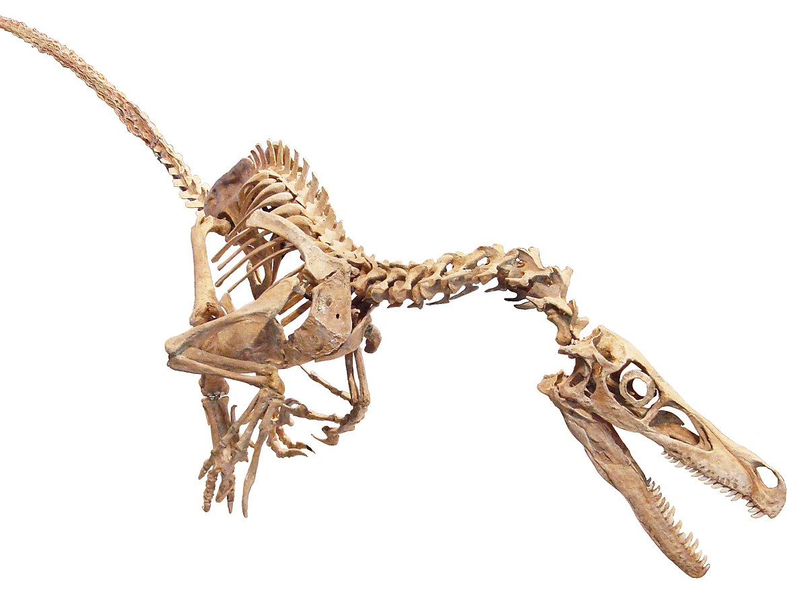
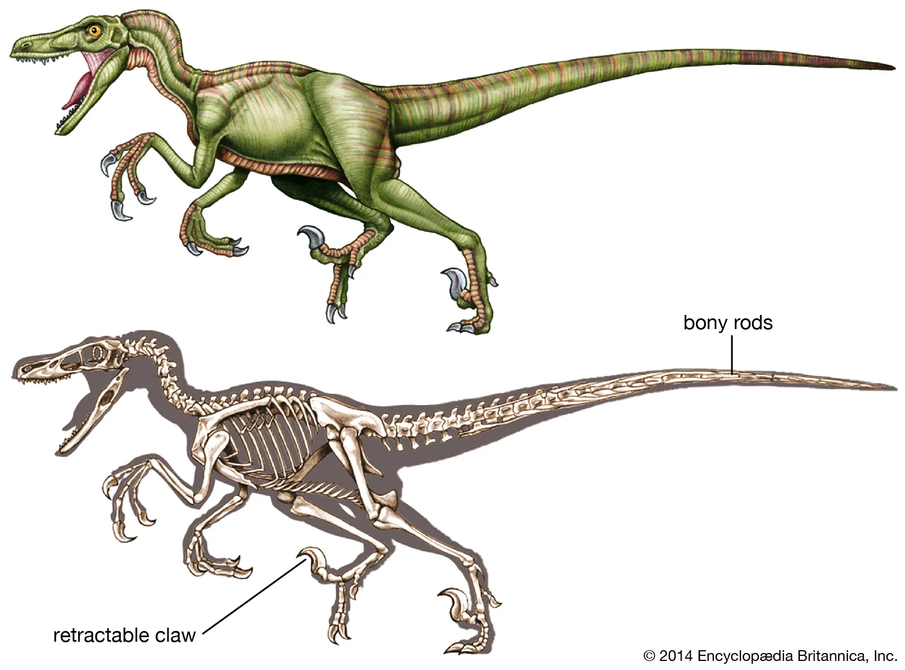
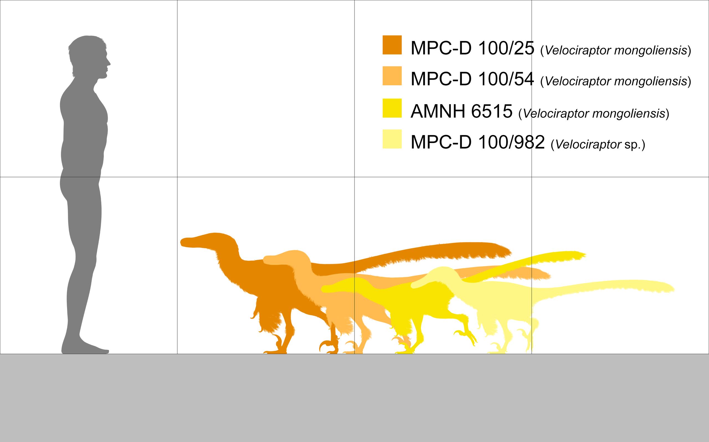
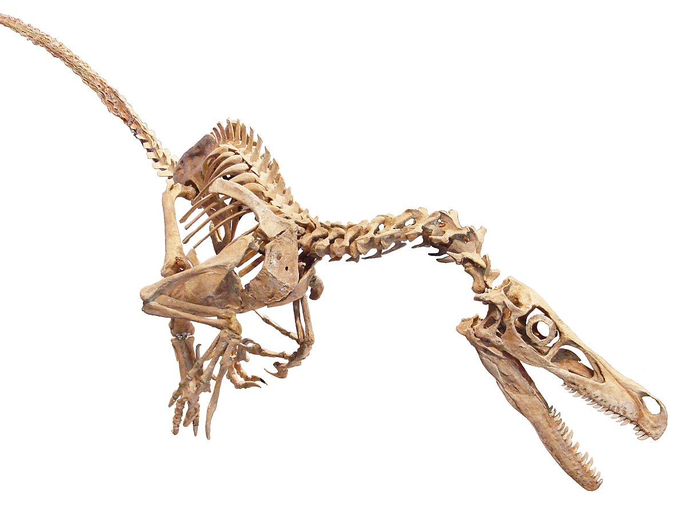

Română
Velociraptorul sau Prădătorul rapid, numit de Henry Fairfield Osborn, era un dinozaur carnivor întâlnit în Mongolia, mai exact Regiunile Barun Goyot și Djadochta în perioada Campanian din Cretacic. Acesta atingea 2 metri lungime, aici regăsindu-se mai multe schelete fosilizate.
English
The Velociraptor or Swift Seizer, named by Henry Fairfield Osborn, was a carnivorous dinosaur found in Mongolia, specifically the Barun Goyot and Djadochta Regions during the Campanian of the Cretaceous. It was 2 meters long, and several fossilized skeletons can be seen here.